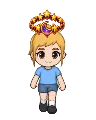
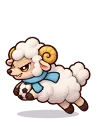

Wiki › Missões › Os carneirinhos fujões
Os carneirinhos fujões
Nível 478 História 🌀 Estádio do Multiverso

A história
Meus Carneirinhos de Nuvem fugiram para o campo e não deixam ninguém jogar. Passe por 150 deles!
O que fazer
- Vença 150x

Carneirinho de Nuvem
📍 Onde achar e como chegar
👾Quem: Carneirinho de Nuvem — Nível 482
🗺️Onde: 🎯 Campos de Nuvem (🌀 Estádio do Multiverso)
🧭Viagem: 🌀 No Rio de Janeiro, fale com o Guardião do Multiverso.
🧭Caminho: de lá: 🌀 Estádio do Multiverso → ☁️ Picos Nublados → 🎯 Campos de Nuvem
📌Lá dentro: no meio do mapa, perto da placa “🎯 CAMPOS DE NUVEM”
Recompensas
- ⭐ 97.993.160 XP
- 🪙 7.300.000 tostões
- 8x
 Banquete dos Anões
Banquete dos Anões
➡️ Depois, libera: O olho que tudo vê